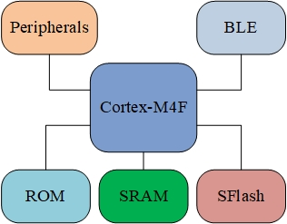
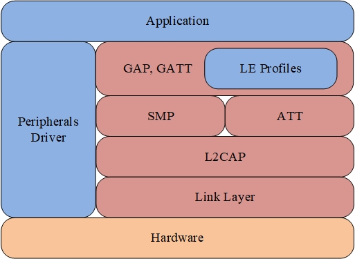
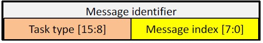
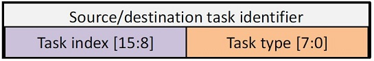
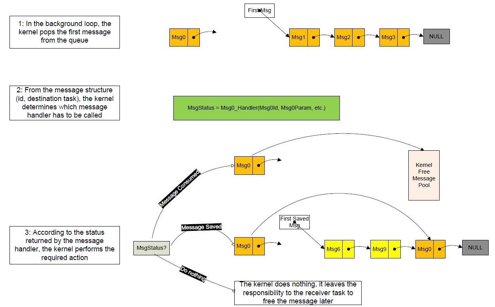
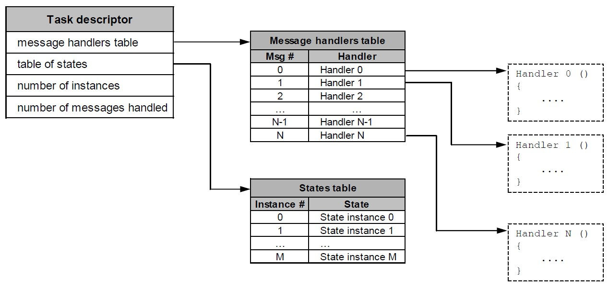
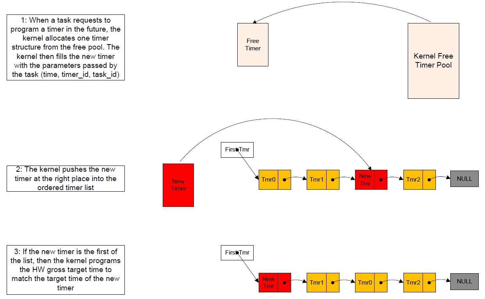
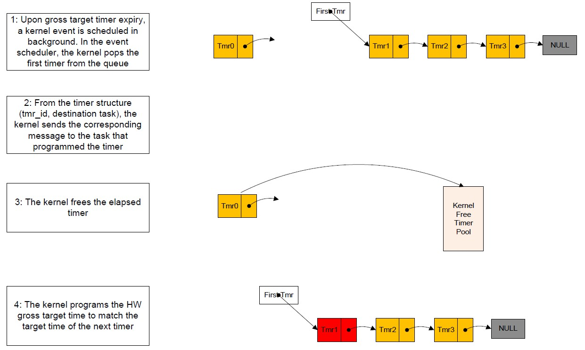

|
OM6621P Programming Guide
Bluetooth Low Energy (BLE) 5.1
|
|
OM6621P Programming Guide
Bluetooth Low Energy (BLE) 5.1
|
OM6621P is an Ultra Low Power SoC (System-on-Chip) solution designed for Bluetooth Low Energy 5.1, which combines an ARM Cortex-M4F processor, 256KB ROM, 392K SRAM, 2.4GHz RF transceiver and a full range of peripherals.

The software platform consists of two main parts: Firmware and Application project. All codes should be executed from internal SRAM and ROM. The code executed in the ROM is called Firmware. The code executed in the SRAM is called Application project. The FLASH can be used to store the application program and the user data which should be saved when system is power-down.

OM6621P is an small and efficient event-driven Operating System and not run with RTOS, offering the following features:
| File | Description |
|---|---|
| ke_event.h | Contains the event handling primitives. |
| ke_mem.h | Implementation of the heap management module. |
| ke_msg.h | This file contains the scheduler primitives called to create or delete a task. It contains also the scheduler itself. |
| ke_task.h | Contains the implementation of the kernel task management. |
| ke_timer.h | Contains the scheduler primitives called to create or delete a timer task. It contains also the timer scheduler itself. This is part of the BLE protocol stack. |
| co_timer.h | Soft timer that is based on hardware 32k timer. This one is a better choice than ke_timer. |
A message is identified by a unique ID composed of the task type and an increasing number.

A message has a list of parameters that is defined in a structure (see chapter Message Object).
The structure of the message contains:
The source and destinations tasks describe which task the message is coming from/to. As a task may implement multiple instances, these source and destinations tasks identifiers are constructed with both the task index and the task type.

During message allocation, the size of the parameter is passed and memory is allocated in the kernel heap. In order to store this data, the pointer on the parameters is returned. The scheduler frees this memory after the transition completion.
A Message queue is defined as a linked list composed of message element:
Prototype:
This primitive allocates memory for a message that has to be sent. The memory is allocated dynamically on the heap and the length of the variable parameter structure has to be provided in order to allocate the correct size.
Prototype:
Send a message previously allocated with any ke_msg_alloc()-like functions. The kernel will take care of freeing the message memory. Once the function have been called, it is not possible to access its data anymore as the kernel may have copied the message and freed the original memory.
Prototype:
Send a message that has a zero length parameter member. No allocation is required as it will be done internally.
Forward a message to another task by changing its destination and source tasks IDs.
Prototype:
Free allocated message.
The scheduler is called in the main loop of the background. The scheduler function is rwip_schedule().
In background loop, the Kernel checks if the event field is non-null, and executes the event handlers for which the corresponding event bit is set
The scheduler checks the event field and gets the one with the highest priority. The function below is in charge of finding the event marked with the highest priority set:
co_clz(field);
The event priority depends on its position within the bit field (highest positions have highest priority). The position is defined outside of the kernel source code.
| Function | Description |
|---|---|
| ke_event_set | Set event, Can be called in an interrupt to delay processing something. |
| ke_event_clear | Clear event. |
| ke_event_callback_set | Register even callback which is called in main loop (co_sche) with a non-interrupting context |
(**) About co_power_manage(), please reference Power Manage.

The Save service allows to “SAVE” a message i.e. to store it in memory without being consumed. If the task state change after a message is received the scheduler will try to handle the saved message before scheduling any other signals.
A kernel task is defined by:
The task descriptor:
The kernel keeps a pointer to each task descriptor, which is used to handle the scheduling of the messages transmitted from a task to another one.

Time is defined as duration, the minimum step is 10ms.
The structure of the timer message contains:

Start or restart a timer.
Prototype:
The function first cancel the timer if it exists, then it creates a new one. The timer can be one-shot or periodic, i.e. it will be automatically set again after each trigger. The setting of a periodic timer can be done through a handler that calls this function upon the expiration of the previously set timer.
Remove a registered timer.
Prototype:
This function searches for the timer element identified by its timer and task identifiers. If found, it is stopped and freed, otherwise an error message is returned.
Check if a requested timer is active.
Prototype:
This function pops the first timer from the timer queue and notifies the appropriate task by sending a kernel message. If the timer is periodic, it is set again; if it is one-shot, the timer is freed. The function checks also the next timers and process them if they have expired or are about to expire.
Adjust all kernel timers by specified adjustment delay.
Prototype:
This function updates all timers to align to a new SCLK after a system clock adjustment.

The implementation of the soft timer is similar to the soft timer in RTOS. It is based on hardware 32k timer, so it can run in sleep. This like ke_timer, but this one is a better choice than ke_timer. ke_timer is base on BLE stack and co_timer is more independent.
| Function | Description |
|---|---|
| co_timer_set | Create a thread safety soft timer |
| co_timer_del | Delete a thread safety soft timer |
Builds the task identifier from the type and the index of that task:
Retrieves task type from task id:
Retrieves task index number from task id: